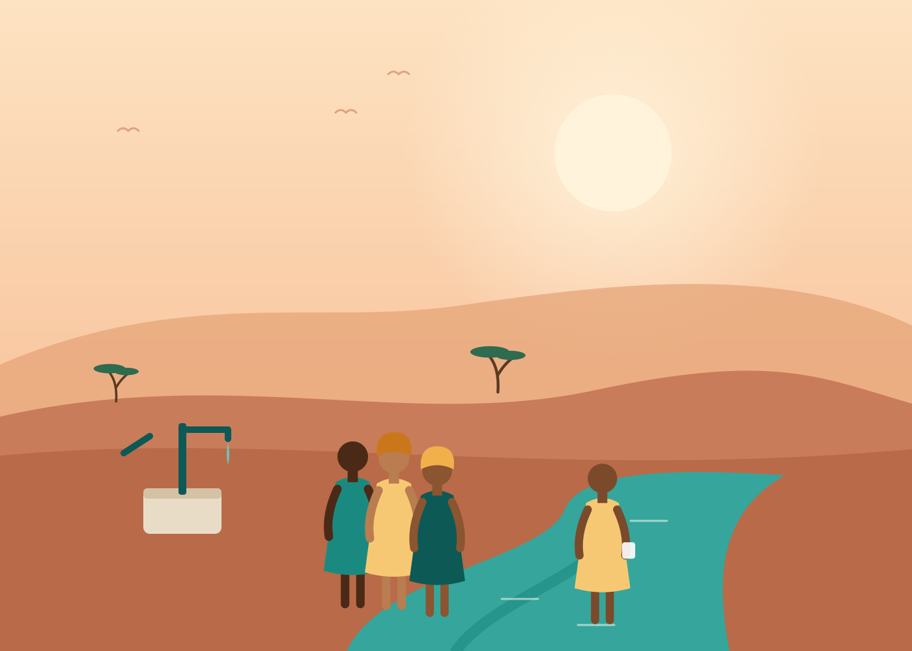
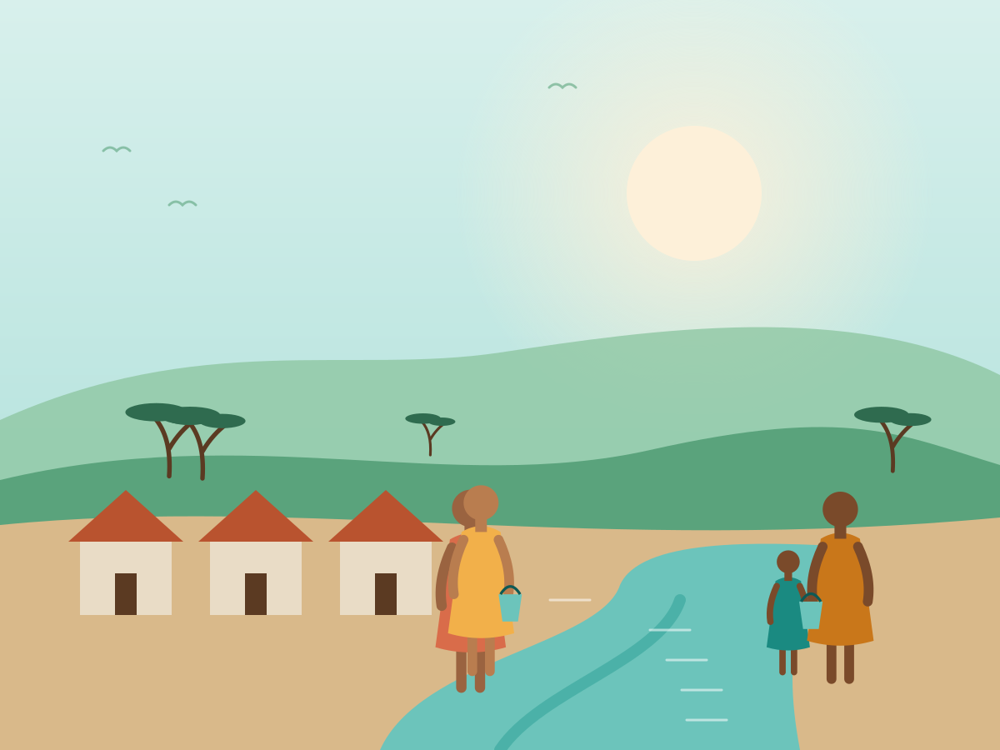

Clean water changes everything
Water close to home. Futures within reach.
We work alongside rural communities to build safe water systems they own and run, so girls can go to school, clinics can heal and families can thrive.
38,000 monthly donors
making water last, month after month

Just completed
Borehole #1,940, Lokichar
2,300 people · solar powered
1,240,000
people with safe water
3,860
water points built
612
schools with clean water
94%
still working after 5 years

Our mission
Water that lasts, run by the people who use it.
One in four people still lacks safe drinking water. Too many water projects break within a few years. We do things differently: every system we fund is chosen, owned and maintained by its community, with local mechanics and fair fees that keep it working for decades.
- Community owned
Local water committees lead every project. - Built to last
Monitored by sensor for 10 years. - Radically transparent
Every project mapped and reported. - Locally staffed
92% of our team live where they work.
What we do
Three ways your gift brings water home
Community wells & boreholes
Deep, solar-pumped boreholes with village water committees who own, run and repair them.
1,940 water points
Pump mechanics cooperatives
Training and tool kits for local mechanics, so a broken pump is fixed in days, not months.
312 mechanics trained
Water for health clinics
Running water, hand-washing stations and safe sanitation for rural clinics and maternity wards.
148 clinics equipped

Story spotlight · Lokichar, Kenya
The well that brought Amina back to school
“Now I walk to school, not to the river. I want to be an engineer and build wells like this one.”
Amina, 13
Read Amina's storyDry Season Appeal 2026
Help us reach 40 villages before the rains fail.
$528,400
of $750,000 goal
- Donors
- 2,315
- Days left
- 18
- Matched by
- The Halden Fund
Every gift to the appeal is doubled until we hit our goal.
Double my giftWith thanks to our partners
Stories from the field, once a month
Photos, updates and the occasional good-news surprise from the communities you support. No spam, ever.